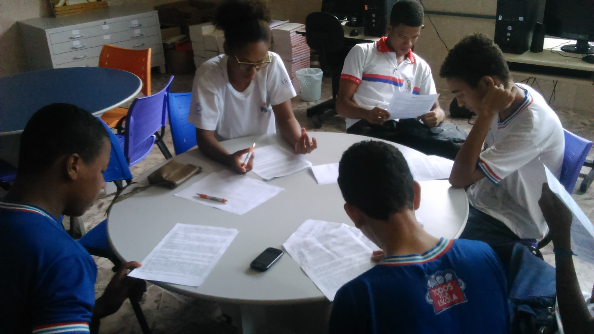
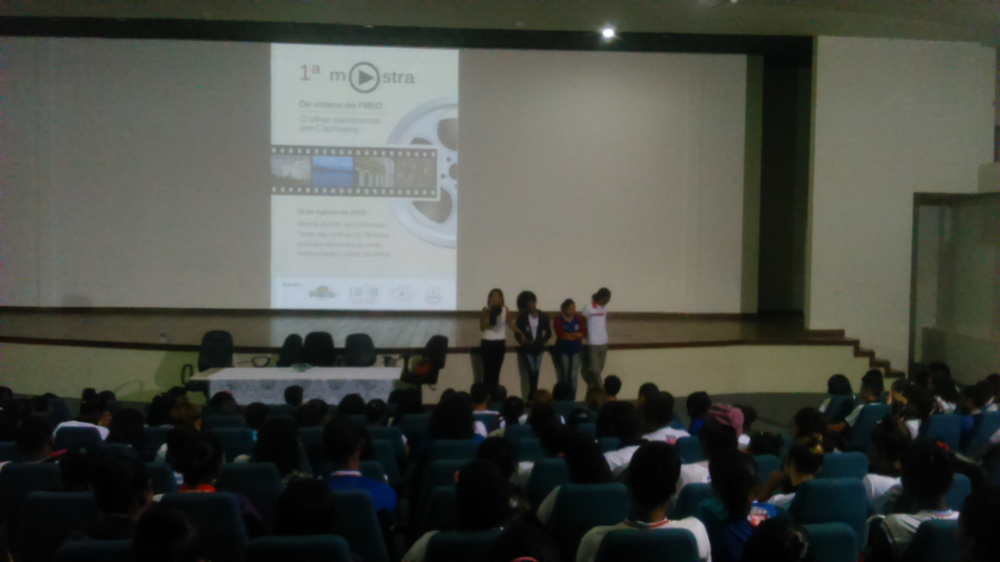
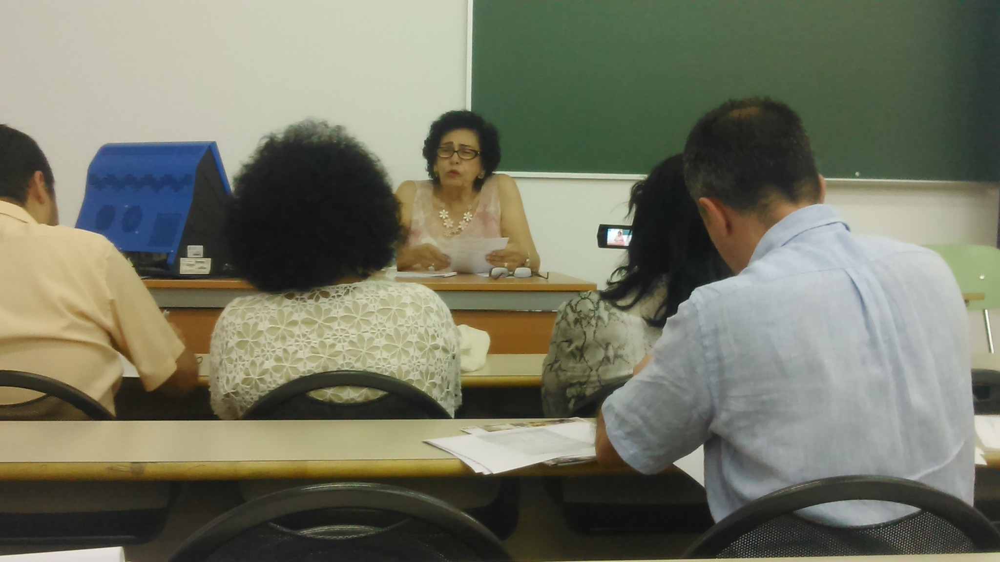
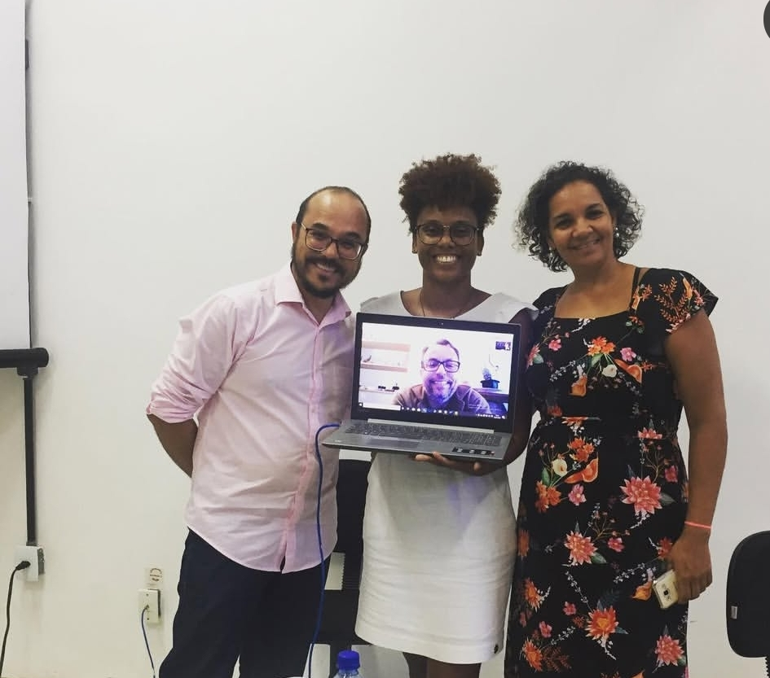
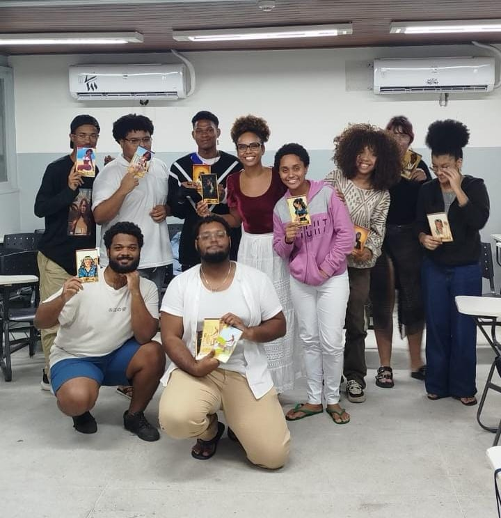
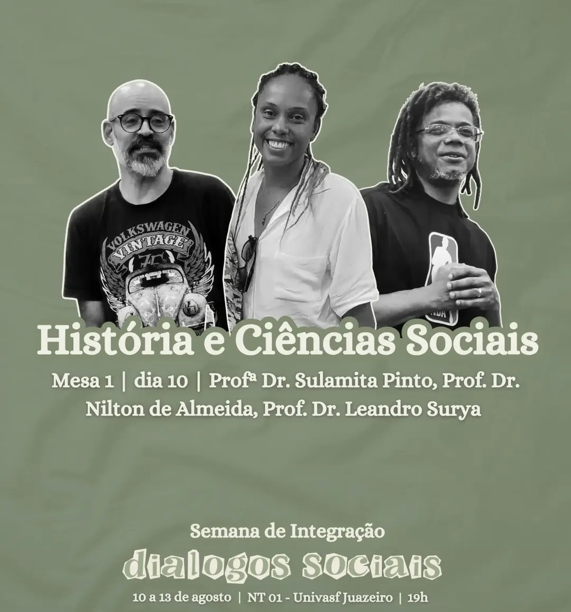
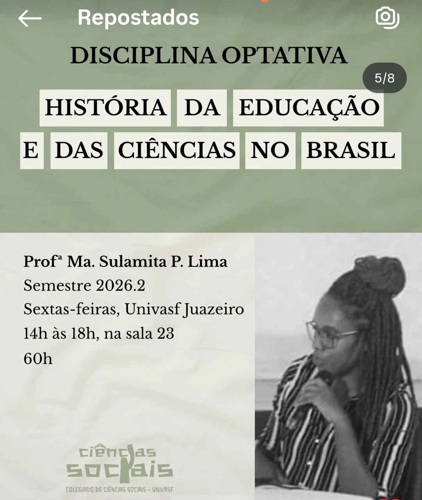

2014 · Cachoeira
Atividade com o PIBID
Registro de atividade realizada no Colégio Estadual da Cachoeira no âmbito do PIBID História.
Trajetória de egressa
Do PIBID e da circulação acadêmica à pós-graduação e à docência universitária.
2011.1–2015.1
Sulamita Pinto ingressou no Curso de História da UFRB em 2011.1 e concluiu a graduação em 2015.1. As fotografias compartilhadas no formulário registram experiências no PIBID História, atividades acadêmicas no CAHL e uma primeira viagem internacional para participação em evento sobre Inquisição.
Sua trajetória posterior reúne pós-graduação, docência universitária e circulação entre diferentes instituições. No formulário do Memorial, Sulamita informa que está finalizando o Doutorado na Universidade Federal da Bahia e que atua como professora substituta na Universidade Federal do Vale do São Francisco.
Memórias do curso

Registro de atividade realizada no Colégio Estadual da Cachoeira no âmbito do PIBID História.

Apresentação de resultados do trabalho desenvolvido no PIBID, realizada no auditório do CAHL.

Registro da primeira viagem internacional para participação em evento sobre Inquisição, em Alcalá de Henares.
Depois da UFRB

Defesa do mestrado realizada na Universidade Federal da Bahia.

Atividade com estudantes do primeiro semestre da Licenciatura em Artes Visuais da UFRB, durante período de atuação como professora substituta. A proposta envolveu a produção de material didático para o ensino de História do Egito Antigo.

Mediação da mesa de abertura “Diálogos Sociais”, na Mesa 1 — História e Ciências Sociais, com participação dos professores Leandro Surya e Nilton Almeida, na UNIVASF.
Você hoje

Sulamita informa atuar como professora substituta na UNIVASF, onde ministra História e Historiografia do Brasil Contemporâneo e História e Historiografia das Ciências no Brasil. Paralelamente, finaliza o Doutorado na UFBA, em Salvador.